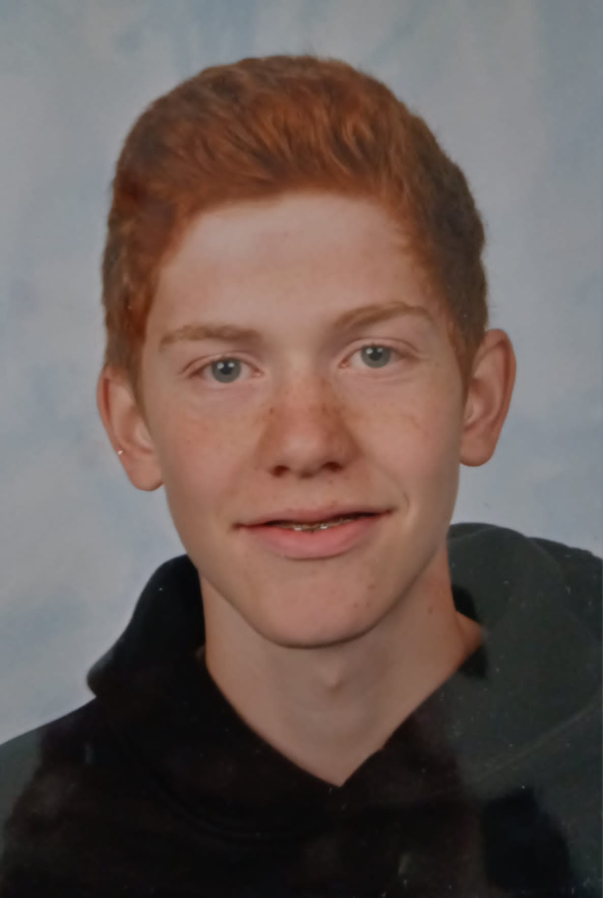

this page contains some information about me, in case you want get to know me a little better!
i will now elaborate further on the above
i love gaming, i mostly like playing valorant and rocket league. i have been doing it since i was young. and i have been playing handball since i was 7 years old. i got into it via a friend. i live in wouw, and i think it's the perfect town, because you have all the facilities you need. but still get that laid back feeling of a town. i guess the only negative is that i don't really live close to any schools.